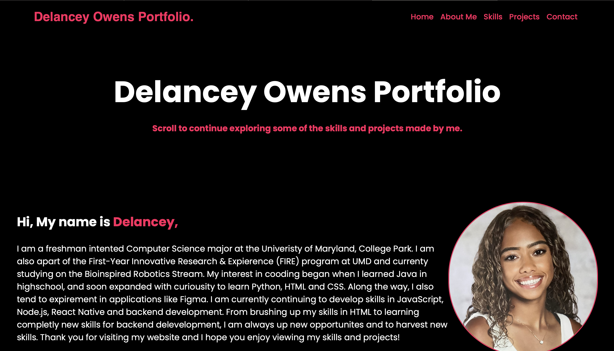

Delancey Owens Portfolio
Keep scrolling to discover more of the skills and projects I've created
Hi, My name is Delancey,
I am a freshman studying Computer Science at the University of Maryland (UMD), College Park. I am also a participant in the First-Year Innovation & Research Experience (FIRE) program at UMD, where I'm currently focused on the Bioinspired Robotics Stream. My journey into coding began in high school when I first learned Java, and that sparked my interest in exploring other programming languages like Python, HTML, and CSS. Along the way, I also started experimenting with design applications like Figma. Currently, I'm working on my skills in JavaScript, Node.js, React Native, and backend development. From strengthening my HTML knowledge to diving into backend technologies, I'm always excited to take on new challenges and expand my expertise. Thanks for visiting my website—I'm glad you had an opportunity to explore my skills and projects!
Skills
Projects
-Media Manager Project-
CMSC 131- Object-Oriented Programming
⚬ Developed a media rental manager system database using Java to track customer media usage.
⚬ Created methods that store, update and process rentals for various types of media.
⚬ Used skills like inheritance, class designing and polymorphism.
Skills used: Java

-Tic-Tac-Toe Game-
⚬ Constructed a classic game of Tic-Tac-Toe that allow two players and their choice of any symbol to use.
⚬ Includes features like JButton and JPanel that allows players to click their moves on a grid.
⚬ Features frequent interactive feedback like a players turn to go or permitting invalid moves.
Skills used: Java
-Calorie Calculator and Intake Tracker-
⚬ Built Calorie Calculator to calulate a user's Basal Metabolic Rate (BMR) and Total Daily Energy Expenditure (TDE) to estimate a users calorie deficit based on their weekly weight loss.
⚬ Imported a food and calorie data set from Kaggle that enabled users to search foods, view serving size, and receive accurate calorie count.
⚬ Tracks users food intake, frequently updates intake and compares it to their calorie deficit goal for the day.
Skills used: Python, Kaggle

-My Project Portfolio-
⚬ Highlights my most recent projects and skills across various coding languages.
⚬ Used interactive design features like hover effects, scroll behavior and clickable elements to enhance website functions.
⚬ Briefly summarizes projects with titles, visuals and bullet points to give users better understanding of my skills.
Skills used: HTML, CSS
-FinTech App Protoype-
⚬ Created prototype app called ShellShock that allows incoming and current college students to view and match available scholarships recently received by other UMD Students
⚬ The sole purpose of this prototype is to provide solutions in the FinTech and financial aspect for students to potentially ease burden and stress regarding college expenses.
⚬ Used Figma to build an interactive application that allows easy navigation towards sections like FAQ or scholarship availability and details.
Skills used: Figma